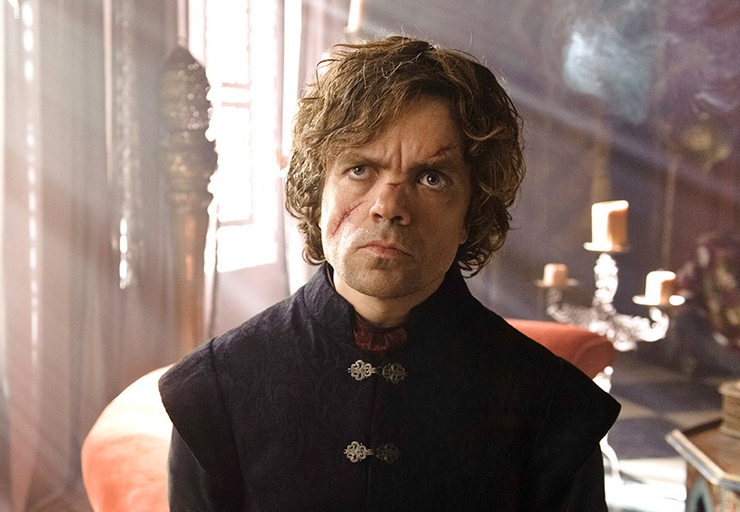
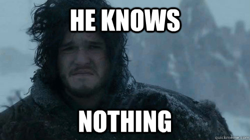

Your personality type is:
ESTJ: Robb Stark
Keirsey says ESTJ’s “like to take charge of groups and are comfortable issuing orders. Rank, they believe, has its obligations, but it also has its privileges… Even as children they are industrious, and they usually respect their parents as authority figures… Their industry and perseverance only become more important to them as they grow into adulthood and take on the responsibilities of job and family.” Robb grows from a dutiful son into a confident, focused leader over the course of the season.
ISTJ: Ned Stark
According to Keirsey, ISTJ’s are “are extraordinarily persevering and dutiful… In their quiet way, Inspectors see to it that rules are followed, laws are respected, and standards are upheld… Their words tend to be plain and down-to-earth, not showy or high-flown.” Ned fits the mold of the “inspector” category to a tee, methodically seeking out concrete information about the plot against Robert, and holding strictly to his values. Keirsey’s description even says people of this type are often accused of “having ice in their veins” despite their good intentions.
ESFJ: Cersei Lannister
This type supposedly “are the great nurturers of social institutions such as schools, churches, social clubs, and civic groups… friendly social service is a key to their nature.” Alright, nevermind. There is no one like that in Game of Thrones, so let’s just say that Cersei Lannister is what you get when you mix an ESFJ with a sociopath. She is comfortable in social situations (E), more direct than abstract in her thinking (S), driven by her love for her brother and children and hatred of others (F), and presents the image of a devoted matriarch (J). Too bad we can’t add a (B) for batshit crazy.
ISFJ: Catelyn Stark
Keirsey refers to ISFJ’s as “protectors”. “Their primary interest is in the safety and security of those they care about… [They] have an extraordinary sense of loyalty and responsibility in their makeup, and seem fulfilled in the degree they can shield others from the dirt and dangers of the world… Their reserve ought really to be seen as an expression of their sincerity and seriousness of purpose.” Catelyn is constantly concerned for her husband and children, trying to keep them safe despite the dangers coming from all directions.
ESTP: Jaime Lannister
Keirsey says that ESTP’s “…will take tremendous risks to get what they want, and seem exhilarated by walking close to the edge of disaster… these smooth operators are usually something of a mystery to others. While they live in the moment and lend excitement – and unpredictability – to all their relationships, they rarely let anyone get really close to them.” Jaime is impulsive (throwing Bran out the window) and fearless (taunting Catelyn to kill him). He is handsome and popular, but only one person knows him very well… you know who I mean. Late in the series, Jaime says “There are no men like me… only me.” Well Jaime, according to Keirsey’s stats, about 10% of the population is like you, although hopefully not when it comes to the incest and attempted murder.
ISTP: Arya Stark
ISTP’s “love action, and know instinctively that their activities are more enjoyable, and more effective, if done impulsively, spontaneously, subject to no schedules or standards but their own… they can be fiercely insubordinate to those in authority, seeing rules and regulations as unnecessarily confining… [they] want to be free to do their own thing, and they are proud of their ability to do it with an artist’s skill.” Arya certainly wants to learn to use Needle like an artist. She chafes at the strict female role thrust upon her, and wishes to chart her own way in the world, doing what she loves.
ESFP: Tyrion Lannister

This category of people is “exciting and full of fun, and their great social interest lies in stimulating those around them to take a break from work and worry, to lighten up and enjoy life… [they] are smooth, talkative, and witty; they always seem to know the latest jokes and stories, and are quick with wisecracks and wordplay–nothing is so serious or sacred that it can’t be made fun of. Performers also like to live in the fast lane…” I don’t know if Westeros has fast lanes (horse drawn carts can’t move very quickly), but the equivalent is probably all the wine and prostitutes Tyrion is fond of.
This category of people is “exciting and full of fun, and their great social interest lies in stimulating those around them to take a break from work and worry, to lighten up and enjoy life… [they] are smooth, talkative, and witty; they always seem to know the latest jokes and stories, and are quick with wisecracks and wordplay–nothing is so serious or sacred that it can’t be made fun of. Performers also like to live in the fast lane…” I don’t know if Westeros has fast lanes (horse drawn carts can’t move very quickly), but the equivalent is probably all the wine and prostitutes Tyrion is fond of.
ISFP: Daenerys Targaryen
Keirsey’s description of this personality type largely centers on its tendency toward artisitic pursuits, but he also notes that they “are especially sensitive to the pain and suffering of others, and they sympathize freely with the sufferer.” Daenerys goes to personal risk to free mistreated slaves, and she suffers deeply when Khal Drogo does. She may not be “seized by the act of artistic composition, as if caught up in a whirlwind”, but she does seem to impulsively draw many actions from within herself, such as developing the ritual that hatches her dragon eggs.
ENFJ: Syrio Forel
This one’s easy, as it’s called “the teacher”. ENFJ’s “ability to fire the imagination can amount to a kind of genius which other types find hard to emulate… [they] will voice their passions with dramatic flourish… [they] like things settled and organized.” I have to say, I am totally uncoordinated, but if someone tossed me a sword, said “Next time you will catch it,” then spouted out awesome lines about saying “Not today” to the god of death… I bet I could learn to fight.
INFJ Varys

Keirsey calls INFJ “the counselor”. They “prefer to work intensely with those close to them, especially on a one-to-one basis, quietly exerting their influence behind the scenes. [They] value their integrity a great deal, but they have mysterious, intricately woven personalities which sometimes puzzle even them.” Remember Varys’s conversations with Ned in his cell? He managed to control Ned, to get him to admit his treason through a strong understanding of Ned’s motivations (the safety of his daughter), but he did it for what he considered to be his own sense of honor in valuing the peace of the realm.
ENFP: Robert Baratheon
Robert at the beginning of the show has certainly declined, but in his youth he exhibited the best qualities of an ENFP. He saw “life as an exciting drama, pregnant with possibilities for both good and evil” and was “vivacious and inspiring… Fiercely individualistic, [striving] toward a kind of personal authenticity, and this intention always to be [himself was] quite attractive to others.” He certainly inspired an army to rebel in his name, got the devoted loyalty of Ned and others, and commanded the infatuation of plenty of women, until drunkenness and debauchery got to him. So let that be a lesson to you ENFP’s.
INFP: Jon Snow

These individuals “have a profound sense of idealism that comes from a strong personal sense of right and wrong. They conceive of the world as an ethical, honorable place… Set off from the rest of humanity by their privacy and scarcity, Healers can often feel even more isolated in the purity of their idealism. [they] might well feel a sense of separation because of their often misunderstood childhood… [they] begin to believe they are bad to be so fanciful, so dreamy, and can come to see themselves as ugly ducklings.” Pushed to the side because of his bastard birth, Jon tries to retain his father’s honor, and sees the world in idealistic terms.
These individuals “have a profound sense of idealism that comes from a strong personal sense of right and wrong. They conceive of the world as an ethical, honorable place… Set off from the rest of humanity by their privacy and scarcity, Healers can often feel even more isolated in the purity of their idealism. [they] might well feel a sense of separation because of their often misunderstood childhood… [they] begin to believe they are bad to be so fanciful, so dreamy, and can come to see themselves as ugly ducklings.” Pushed to the side because of his bastard birth, Jon tries to retain his father’s honor, and sees the world in idealistic terms.
ENTJ: Tywin Lannister
According to Keirsey, ENTJ’s “are bound to lead others, and from an early age they can be observed taking command of groups… they have a strong natural urge to give structure and direction wherever they are–to harness people in the field and to direct them to achieve distant goals…more than any other type [they] desire (and generally have the ability) to visualize where the organization is going.” Tywin runs his family and his realm like an organization, trying to guide Jaime and later Tyrion toward his own ends. He takes the long view, hoping that if the Lannisters make the right choices they could “establish a dynasty that lasts a thousand years”.
INTJ: Petyr Baelish
Keirsey calls the INTJ “the mastermind”. They “are head and shoulders above all the rest in contingency planning… In their careers, Masterminds usually rise to positions of responsibility, for they work long and hard and are dedicated in their pursuit of goals… Masterminds do not feel bound by established rules and procedures, and traditional authority does not impress them.” Littlefinger, born into a humble family, planned and manipulated his way above so many of the highborn lords around him. He is a rational thinker, but with deeply held public and private ambitions (get power, get Catelyn, respectively).
INTP: Samwell Tarly
INTP’s “will learn in any manner and degree they can. They will listen to amateurs if their ideas are useful, and will ignore the experts if theirs are not… They are inclined to be shy except with close friends…” No one fit much else about this category, so… congratulations, INTP. You’re Sam.
ENTP: Melisandre
The ONE option I wish you couldn't get because I didn't finish a description for her, but generally ENTP folks are: Inventive, enthusiastic, strategic, enterprising, inquisitive, versatile. Enjoy new ideas and challenges, value inspiration.